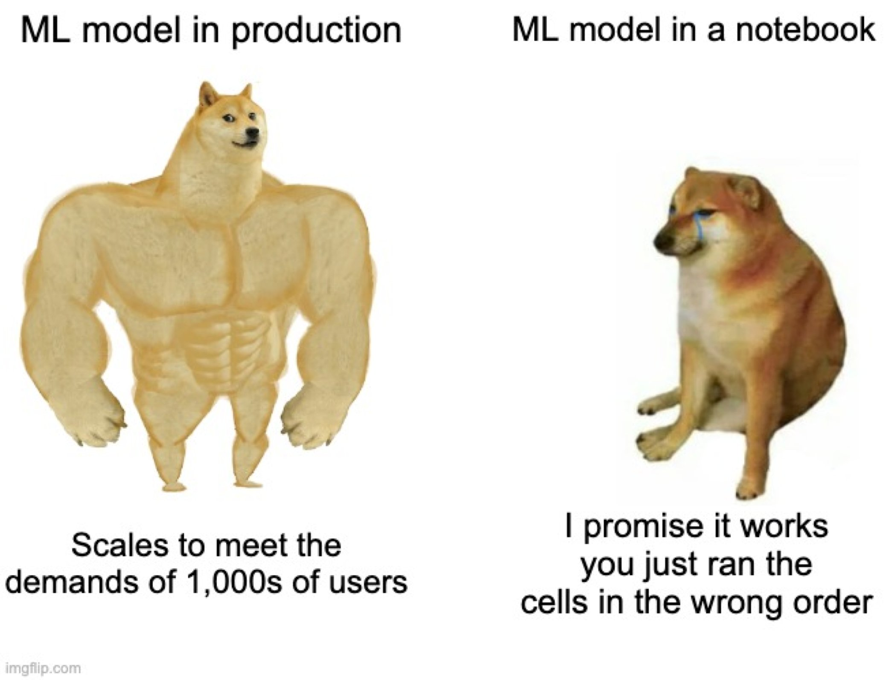

Deploying a simple ML model with Plumber 101
In a recent post, I have been writing about the different roles in the data science ecosystem. Just a couple of years ago, the data science work consisted in the development of business-oriented solutions. Usually, the management would give us access to the data and after doing our ✨ magic ✨, we would provide them with valuable information about the business for making big money 💰💰💰 in the future. (OK, I know it is not that simple. 😉 )
The fact is that part of the core of the Data Science Toolkit is the development of prediction models based on machine learning algorithms. Usual things such as churn prediction, productivity forecasting, sales projections, and very long etcetera are the objective for machine learning models. The usual data scientist approach for developing such models consisted of using something like google Colab, Jupyter notebooks, or (if you prefer the rstats environment) Rstudio notebooks.

The fact is that notebooks are a wonderful tool for almost all the steps in the data science workflow, (Does CRISP ring any bells with you?). You can use notebooks during business understanding, data understanding, preparation, and for building and evaluating your models. The problem arises when management asks us the infamous questions: How can we use the model if you are not here? This simple question encompasses several technical aspects not usually covered in the data scientist role.
Q: How can we use the model if you are not here? In many cases you simply cannot provide the source code of your notebook.
A first approach could be to simply provide the source code of your notebook. But no, that is not a suitable solution. A more realistic alternative is to develop an R shiny or python dash application. There is nothing wrong with that. However, under some scenarios, it is necessary to incorporate your model into the toolkit used by the company. In other words, you will need to provide a sort of interface in such a way that someone else could inject new data and obtain the resulting predictions. Today, the most common approach to do it is by using microservices. There is no established definition of microservices, but as an old-time UNIX user, I like the Wikipedia definition: From a strategy perspective, microservices architecture essentially follows the Unix philosophy of “Do one thing and do it well”.
From a strategy perspective, microservices architecture essentially follows the Unix philosophy of “Do one thing and do it well”
In particular, the term microservices usually refers to web services using a RESTful API. I will not enter into all the details and concepts behind a RESTul API. Just let say that A RESTful API is an architectural style for an application program interface (API) that uses HTTP (the web protocol) requests to access and use data. That data can be used to GET, PUT, POST, and DELETE data types, which refers to the reading, updating, creating, and deleting of operations concerning resources. See Figure 1. An important detail is that data is usually received in XML or JSON formats. Particularly, JSON stands for JavaScript Object Notation and it is preferred since is a lightweight data interchange format

Figure 1. Restful API for for accesing a particular resource, in this case a database. But it could be any kind of resource. An R function accesing your model for instance.
So, now we have hopefully understood the basics of microservices 😉. So how can we easily transform our notebook code into a microservice? The Plumber package comes to the rescue. Of course, Plumber works only in the Rstats world, for the pythoners, flask could be considered as something similar to Plumber.
Training a simple model
It is time to get our hands dirty with some code. Let’s train a simple random forest for predicting the species of the good ol’ IRIS dataset. There is nothing special about the code below. The IRIS dataset is split in the usual 70/30 and a simple Random Forest is trained on using 70% of the dataset. Some basic metrics such as the OOB estimate of error are shown for the resulting model.
library(randomForest)## randomForest 4.6-14## Type rfNews() to see new features/changes/bug fixes.data("iris")
data_size <- nrow(iris)
data_idx <- sample(data_size,(data_size *70)/100)
data_train <- iris[data_idx,]
data_test <- iris[-data_idx,]
rf_model <- randomForest(Species~.,data=data_train)
rf_model##
## Call:
## randomForest(formula = Species ~ ., data = data_train)
## Type of random forest: classification
## Number of trees: 500
## No. of variables tried at each split: 2
##
## OOB estimate of error rate: 6.67%
## Confusion matrix:
## setosa versicolor virginica class.error
## setosa 36 0 0 0.00000000
## versicolor 0 34 3 0.08108108
## virginica 0 4 28 0.12500000We are going to save our model using R standard function save() for serializing objects.
save(rf_model,file="rf_model.rda")Now, we want to predict on the remaining 30%. But instead of using the predict() function. We are going to wrapper the prediction inside our own function mypredict(). I know it could seem unnecessary, but it will be required for building the microservice RESTful API.
mypredict<-function(s_len,s_width,p_len,p_width){
newdata=data.frame(
Sepal.Length=s_len,
Sepal.Width=s_width,
Petal.Length=p_len,
Petal.Width=p_width
)
prediction<-predict(model,newdata)
return(list(class=prediction))
}The function mypredict() is pretty simple. It basically receives the four features and creates a dataframe for use with predict(). Notice that the idea of using a function is to encapsulate not only the prediction but also all the data preparation required by your model. Of course, depending on the complexity of your data preparation process you will need to use more functions.
Creating the service
Now, using the mypredict()function as the source, let’s create the service using Plumber. Plumber allows you to create a RESTful API by merely decorating your existing R source code with roxygen2-like comments. Let’s create a new source file named myservice.R [*] and copy & paste the following lines:
library(randomForest)
library(plumber)
# loading the model globally for using the classifier
model<-get(load("rf_model.rda"))In the first two lines, we simply load the randomForest package and the plumber package (the responsible for all the magic). Then, we load (globally) our model object. We use the get()function to assign it to the model variable. Otherwise, it would be load as rf_model(the name used when the model was created).
Now, it is time to include the Plumber magic to convert our mypredict() function into a microservice using the the following code:
### PLUMBER ANOTATIONS
# prediction function
#* @get /mypredict
#* @serializer unboxedJSON
function(s_len,s_width,p_len,p_width){
newdata=data.frame(
Sepal.Length=s_len,
Sepal.Width=s_width,
Petal.Length=p_len,
Petal.Width=p_width
)
prediction<-predict(model,newdata)
return(list(class=prediction))
}The function remains basically the same, but now we have included a couple of special comments above the function. Plumber especially treats those comments starting with #* . These comments are the way we have to make specials annotations into the function. In this particular case we had added two special comments: @get /mypredict and @serializer unboxedJSON. Of course, there are many other annotations provided by the Plumber package. You should check the plumber landing page for more info.
Back to our function, the decorator @get is used to make our R function available as an API endpoint. This basically means that the function will be available when the /mypredict resources are accessed. The@serializer unboxedJSON decorator indicates that the function output should be converted from native type format (an R list in this case) to JSON. And that is pretty much all you need to do. After these simple annotations, the mypredict() function has now been converted to a web microserver.
There is one more final thing to do. We need to execute the service. For this, we simply are going to create a new file named run_service.R and add the lines of codes below.
### STARTING THE SERVICE
library(plumber)
r <- plumb("myservice.R")
r$run(host = "0.0.0.0",port=8001)We simply need to load the myservice.R file containing the microservice code we have just finished and execute. Plumber will create an HTTP server (webserver) listening in port 8001 and hosting our service in /mypredict .
To execute the server we can use the following command in bash (or your favorite shell)
bash$ Rscript run_service.R If everything went OK. we should see something like this:
randomForest 4.6-14
Type rfNews() to see new features/changes/bug fixes.
Running plumber API at http://0.0.0.0:8001
Running swagger Docs at http://127.0.0.1:8001/__docs__/Testing the service
For testing the service the simplest way is to use curl inside a bash (command line) session.
bash$ curl "http://localhost:8001/mypredict?s_len=0.1&s_width=0.1&p_len=0.1&p_width=0.1"If everything went OK, we should receive a JSON response with a prediction like this.
{"class":"setosa"}By using Plumber we have encapsulated our model and provided a simple API for using the model with new data. The model can now be installed in any cloud server and used according to company guidelines.
Just some final words…
This post provided you with the very very basics of the Plumber package. The package can do a lot more! Please go to the Plumber landing page for more info. Remember that the present post aim at providing you with just the minimal notion about deploying a machine learning model. Hopefully, it could be enough for you. But if not, keep in mind that deploying a Machine Learning model into a company infrastructure usually will require a lot of work and is part of the Machine Learning Engineering (MLE) role.

[*] The random forest model and the source code for the Plumber example are available here